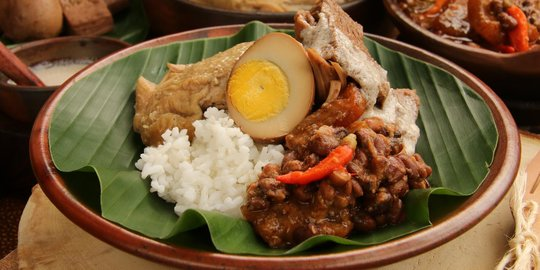

5.GUDEG

gudeg dari jogja merupakan masakan yang berbahan utama nangka muda atau oleh warga lokal disebut gori. Dalam prosesnya, potongan daging nangka ini direbus dengan gula merah dan santan dengan api kecil selama beberapa jam.
Perlu waktu berjam-jam untuk membuatnya. Gudeng dimasak dengan gula aren, dan santan rempah-rempah tambahan termasuk bawang putih, bawang merah, kemiri, biji ketumbar, lengkuas, daun salam, dan daun jati, yang memberikan warna coklat kemerahan ke masakan.
Resep Gudeg
Bahan
1 kg nangka muda
5 butir telur ayam rebus, kupas
2 lembar daun salam
3 lembar daun jeruk
3 cm lengkuas, memarkan
120 g gula Jawa yang cokelat tua
1.5 liter santan sedang
500 ml santan kental
Bumbu:
8 butir bawang merah
5 siung bawang putih
5 butir kemiri
1 sdm ketumbar
1 potong terasi
1/4 sdt jintan
2 sdt garam
Pelengkap:
Sambal goreng krecek
Opor ayam
Sambal bajak
Cara Pembuatannya
1.Potong nangka muda berbentuk dadu besar. Rebus nangka muda dalam air atau air kelapa tua secukupnya hingga lunak. Angkat dan tiriskan nangka muda.
2.Bumbu Halus: Haluskan semua bahan bumbu dengan blender atau ulekan hingga halus benar.
3.Masukkan nangka muda dan telur ke dalam panci. Tuangi santan, masukkan bumbu halus, daun salam, daun jeruk, lengkuas dan gula merah.
4.Masak dengan api sedang hingga bumbu meresap dan kuahnya susut.
5.Tuangkan santan kental. Masak dengan api hingga kuah benar-benar susut. Matikan api.
6.Sajikan gudeg dengan pelengkapnya.